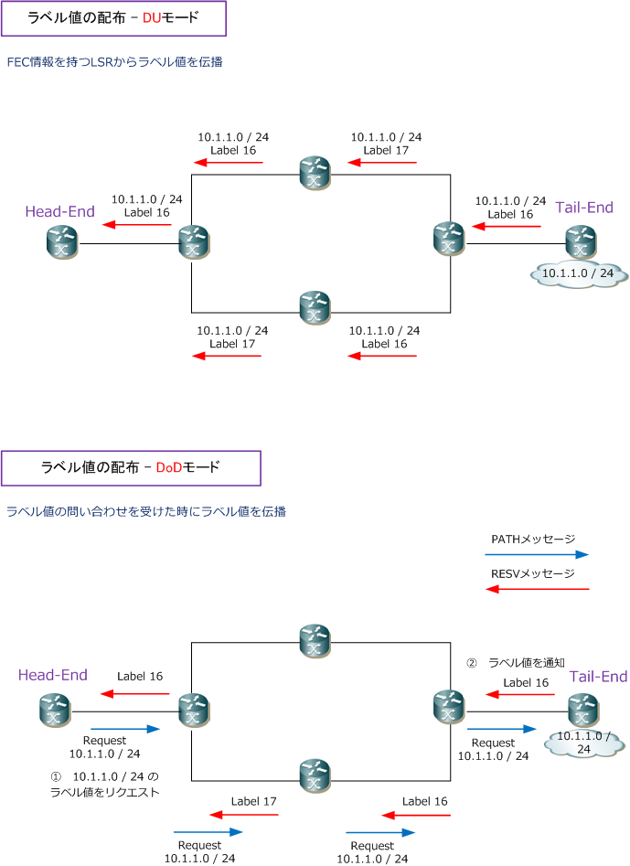
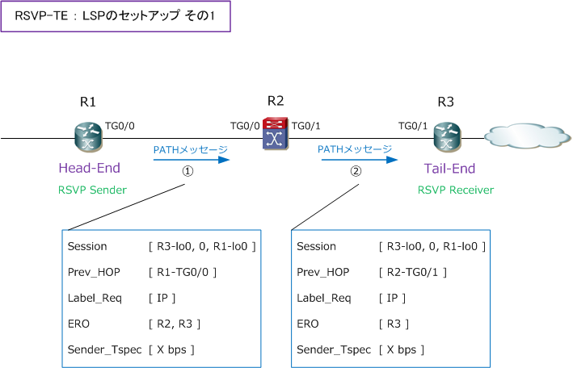
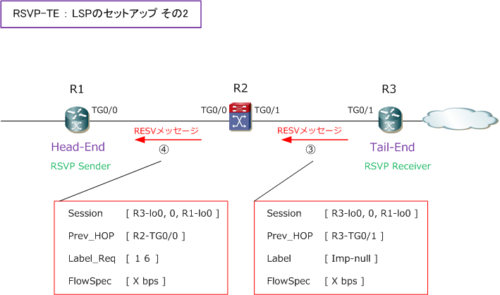
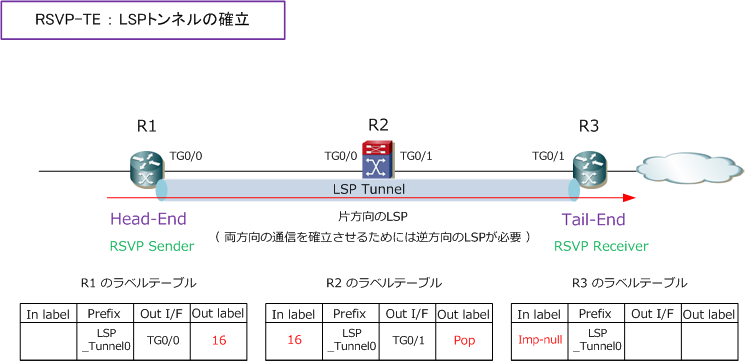

MPLS-TE
MPLS-TEとは
MPLS-TE（ Traffic Engineering ）では、LSPの経路を明示的に指定することで、LSPの経路を自由に 制御できます。このMPLS-TEにより、トラフィックの分散やLSP単位での各種QoS制御を実現できます。 各種QoS制御とは帯域確保、帯域制限、優先制御のこと。例えば、ルータに確保したい帯域を定義して ルーティングテーブルに関係なく、到達ネットワークまで必要帯域を確保した最適経路を自動的に生成。
MPLS-TEを実装するための2つの技術
MPLS-TEを実装するためには、MPLSの技術に加えて、大きく以下の2つの機能が必要となってきます。
| 必要機能 | 実装プロトコル | 説明 |
|---|---|---|
| 帯域の管理機能 | OSPF-TE / IS-IS-TE | 例えば、OSPF-TEのLSA Type10で以下を周期的に伝達 ・ 帯域情報（どのくらいの帯域が使用できるかの情報） ・ リンク属性（どのようなパスで使用されるのかの情報） ・ TEメトリック（リンクのメトリック値） |
| 経路の生成機能 | RSVP-TE / CR-LDP | 例えば、RSVP-TEなどで以下の役割を担い情報伝達 ・ LSPの帯域幅を予約 ・ LSP経路の明示的な指定 ・ その経路用のLabelの割り当てを行いTE-Tunnelを生成 |
Cisco機器で実装されるOSPF-TEとRSVP-TEについてもう少し詳しく以下で解説します。IS-IS拡張版の IS-IS-TEも、Ciscoルータでも実装可能ですが、一般的にはOSFP-TEがCiscoルータで使用されています。
| 実装プロトコル | 説明 |
|---|---|
| OSPF-TE | リンクステートプロトコルの特性を生かして、LSA Type 10（Opaque LSA）で情報が伝達される。 ※ 同一エリア内しかリンク情報は伝達されない。 |
| RSVP-TE | IPネットワークにおける帯域予約のためのRSVPにラベル配布機能を追加したのがRSVP-TE。 ※ RSVP-TEはDoDモードです。 |
2種類のラベル配布方式
ラベル配布方式には以下の2種類の方式があります。MPLS-TEで使用する方式はDoDモードとなります。
| ラベル配布方式のモード | プロトコル例 | 説明 |
|---|---|---|
| DU （Downstream Unsolicited） | LDP | LSRからラベル値を決めて一方的に配布するモード ⇒ LSPの経路はIGPの最短経路に従う |
| DoD （Downstream-on-Demand） | RSVP-TE | FECに対応するラベルを問い合わせた時にラベル値を配布するモード ⇒ LSPの経路はルーティングに関係なく明示的な指定、帯域幅の確保 |

RSVP-TEのために実装されたRSVPオブジェクトは以下の通りです。
| RSVPオブジェクト | メッセージタイプ | 説明 |
|---|---|---|
| Label Request Objetct | RSVP PATHメッセージ | ラベル割り当て要求 |
| Label Object | RSVP RESVメッセージ | ラベル割り当て通知 |
| Explicit Route Object（ERO） | RSVP PATHメッセージ | Head EndからTail EndまでのTEパスを明示的に連ねる |
| Record Route Object（RRO） | RSVP PATH/RESVメッセージ | RSVPメッセージが通過したリンクを記録 |
| Session Attribute Object | RSVP PATHメッセージ | パスのプライオリティ、名前、予約スタイルを通知 |
RSVP-TE ： LSPのセットアップ
RSVP-TEでは、RSVP PATHメッセージとRSVP RESVメッセージを使用してLSPをセットアップします。 先ず、RSVP SenderがEROを計算して、そのEROに基づいてPATHメッセージがRSVP Receiverに伝播。

次に、RSVP PATHメッセージに対する応答として、RSVP RESVメッセージを送りホップバイホップで ラベル値をアサインします。

最後に、アサインしたラベル値をLFIBに登録することでSender ⇔ Receiver間でLSPトンネルが確立します。

R1からR3へのLSPを確立させたのと同様に、逆方向のR3からR1へのLSPを確立させる必要があります。
OSPF-TE ： 帯域幅の情報通知
MPLS-TEにおけるLSPでは、最適なパスを計算する上でIGPのリンクステートプロトコルよりも詳細な 情報が必要となってきます。具体的には以下の5つの情報が必要となります。これらの情報は拡張された リンクステートプロトコルであるOSFP-TEなどによって、エリア内にフラッディングされるTEDBに格納 されて、LSPの最適パスの計算に使用されます。OSPF LSA Type10：RFC5250、OSPF-TE：RFC3630。
OSPF LSA Type10（Opaque area local） のLSAが使用されて以下の情報をFlooding
?@ Traffic Engineering metric ?A Maximum bandwidth ?B Maximum reservable bandwidth ?C Unreserved bandwidth ?D Administrative group / Resource Class Color
設計や設定手法についてはCCIE SP用の コンテンツで別途作成し公開していきます。